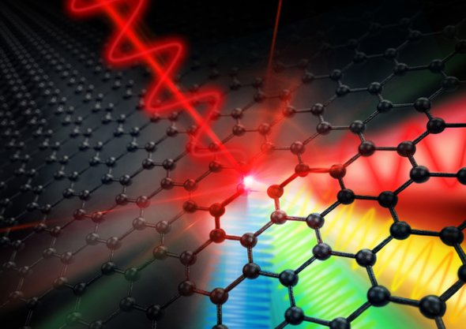

عقارب ساعة الجرافين تدق في نطاق جديد غير مسبوق

علوم
10 - 04 -2018
snc
ظاهريًّا، لا يختلف شكل المبنى الواقع في مدينة دريسدن الألمانية عن غيره من المنشآت الممتدة في تخوم الغابات الشجرية المحيطة بالمدينة المعروفة بكونها عاصمة ولاية ساكسونيا الشهيرة، فالبناء المتوسط الحجم، الذي أُنشئ قبل أكثر من ربع قرن لا يختلف شكله عن سائر الأبنية، فقط تميزه لافتة ضخمة، مكتوب عليها بخط كبير أزرق اللون أربعة حروف HZDR، وهي الحروف الأولى للاسم الألماني لمركز "هيلمهولتز" للأبحاث العلمية.
أما داخل المركز ، فتوجد منشأة أبحاث فريدة من نوعها، تضم مختبرًا ضخمًا لتوليد نوع من الأشعة عالية الشدة تُسمى بالتيراهرتز، وهي موجات كهرومغناطيسية تتوسط تردداتها حول ألف جيجاهرتز، أي 1 وإلى يمينه اثنا عشر صفرًا، وهي الترددات الواقعة بين موجات الميكروويف وموجات الأشعة تحت الحمراء، وهي ترددات ذات أهمية كبيرة في الكشف عن خصائص المواد الإلكترونية، وفي تطوير تقنيات حديثة للتصوير كبديل آمِن للأشعة السينية، إذ تتميز بقدرة عالية على اختراق كثير من المواد دون إحداث أي تأثير ضار، كما أن كثيرًا من الأبحاث تُجرى الآن على استخدام هذه الموجات في الاتصالات وفي تطوير معالِجات حاسوبية تعمل عند هذه الترددات الأعلى من ترددات الميكروويف (أو الجيجاهرتز). ويتم توليد هذه الأشعة في هذا المختبر على شكل نبضات (أو إشارات) بخصائص محددة من حيث الشدة (أو الطاقة) العالية والتنغيم (أي تغيير التردد) والتحكم في العرض الطيفي لها، وهي خصائص يصعب تحقيقها بأي مصدر آخر، وهو ما جعل من "مركز هيلمهولتز" قبلةً للباحثين في المجالات المتعلقة باستخدام تلك الأشعة.
وقبل عام من الآن، خطا "حسن حافظ" الباحث في علوم المواد والليزر بجامعتي حلوان المصرية ودويسبورج-إيسن الألمانية وبمعهد ماكس بلانك الألماني خطواته الأولى داخل تلك المنشأة، لإجراء مجموعة من التجارب على مادة الجرافين التي توصف بكونها مادة المستقبل، لدراسة سلوكها وخصائصها حال تعرُّضها لأشعة "التيراهيرتز"، لينجح مؤخرًا في الوصول إلى نتيجة استثنائية، نُشرت في دورية "نيتشر" قبل نحو شهر، جاء فيها –ولأول مرة- وصفٌ دقيقٌ للخواص اللاخطية لتفاعل بين الجرافين وأشعة التيراهرتز عالية الطاقة.
ويُعَد الجرافين مرشحًا واعدًا للإلكترونيات النانوية في المستقبل؛ إذ إنه -نظريًّا- يمكن أن يزيد معدلات الساعة لتصل بنا إلى معدلات أسرع ألف مرة من الإلكترونيات القائمة على مادة السيليكون اليوم.
وتعمل المكونات الإلكترونية التي تعتمد على السيليكون اليوم بمعدلات ساعة تبلغ عدة مئات جيجاهرتز (GHz)، أي أنها تعمل على إحداث تبديلات أو تغييرات عدة مليارات مرة في الثانية الواحدة. وتحاول صناعة الإلكترونيات حاليًّا الوصول إلى نطاق التيراهرتز، أي بمعدل ساعات يصل إلى ألف ضعف.
ومنذ اكتشاف مادة الجرافين وتحضيرها لأول مرة في عام 2004، دأب الباحثون في هذا المجال في أنحاء العالم على تطوير تقنيات من شأنها تصنيع الجرافين على مدى واسع وبتكلفة زهيدة؛ لجعله منافسًا قويًّا وبديلًا جيدًا لكثير من المواد التكنولوجية وعلى رأسها مادة السيليكون الأشهر في عالم الإلكترونيات، وما زال العمل مستمرًّا في هذا المجال، ويحاول الباحثون أيضًا الكشف عن صفات الجرافين ومعرفة الأكثر عن سلوكه المميز في مختلف الظروف المعملية.
في تلك الورقة البحثية، حاول الفريق العلمي المصري الألماني المشترك معرفة خصائص الجرافين عند ترددات محددة من التيراهرتز، فللجرافين صفات فريدة معروفة سلفًا؛ إذ تتمتع تلك المادة ثنائية الأبعاد المكونة من طبقة كربونية بسُمك ذرة واحدة بصفات لاخطية عالية تم إثباتها نظريًّا، فالفرق بين مستويات التكافؤ ومستويات التوصيل فيها يُساوي صفرًا، أي أن أيَّ طاقة تسقط عليها ستحرر الإلكترونات بسرعة نسبية كبيرة، وهو ما يجعل توصليتها الكهربائية الأعلى بين جميع المواد، وقد تم الكشف عن الصفات الخطية لمادة الجرافين في الكثير من الدراسات باستخدام تحليل طيفي بموجات التيراهرتز، وعلى وجه الخصوص، فقد توقعت النظرية منذ مدة طويلة أن الجرافين يمكن أن يكون مادة إلكترونية "غير خطية" فعالة للغاية، أي مادة يمكنها تحويل حقل كهرومغناطيسي متذبذب فعال إلى حقول ذات تردد أعلى بكثير.
لكن، بقي الكشف عن الصفات اللاخطية للجرافين -وبخاصة التفاعل اللاخطي بينه وبين أشعة التيراهرتز- عصيًّا بشكل عملي، وهو الأمر الذي نجح ذلك الفريق العلمي في الكشف عنه معمليًّا.
تمكَّن الفريق من تقديم أول دليل مباشر على مضاعفة التردد من جيجاهيرتز إلى تيراهرتز في طبقة أحادية من الجرافين، وقدرته على توليد الإشارات الإلكترونية في نطاق تيراهيرتز بكفاءة غير مسبوقة.
في التفاعلات الخطية بين المواد والضوء (أو الموجات الكهرومغناطيسية عمومًا)، تتناسب الطاقة الخارجة من المواد تناسبًا طرديًّا مع الطاقة الداخلة، فمثلًا؛ إذا كان لدينا لوحٌ من الزجاج يمر من خلاله ضوءٌ مرئي، فالنسبة بين الضوء الخارج والضوء الساقط ستساوي رقمًا ثابتًا يسمى معامل الانتقال (أو النفاذية) للوح الزجاج، وفي تلك الحالة، لا تتغير خصائص الزجاج الفيزيائية أو الكيميائية بسبب الضوء، هذا يعني أن المادة خطية، لا تعتمد معاملاتها الضوئية على طاقة الأشعة الساقطة عليها.
أما إذا استخدمنا ضوءًا ذا طاقة أعلى كالذي يتم توليده من الليزرات عالية الطاقة لإجراء نفس التجربة، فسيتحول الزجاج إلى مادة لاخطية، لا تتناسب فيها الطاقة الخارجة مع الطاقة الداخلة بشكل طردي (خطي)، إذ تصبح معاملات الزجاج الضوئية متغيرة، وبالتالي؛ ستكون مُعامِلات الربط غير ثابتة، وهو ما يُحول المادة إلى الصفات اللاخطية.
"في حقيقة الأمر.. تُعد كل المواد لاخطية"، يقول "حسن حافظ" المؤلف الأول للدراسة في تصريحات خاصة لـ"للعلم"، مشيرًا إلى أن الصفات اللاخطية لمعظم المواد تظهر عند تفاعُل المادة مع موجات ذات طاقات (شدة ضوئية) عالية، ولكن تتفاوت درجاتها من مادة إلى أخرى، غير أن ما يميز الجرافين أن معاملاته اللاخطية عالية جدًّا مقارنة بمثيلاتها في أي مادة أخرى، إذ تَظهَر الصفات اللاخطية للخواص الضوئية للجرافين كمعاملات الانكسار والامتصاص والنفاذية وغيرها عند التفاعل مع موجات ذات طاقات أقل.
رصد التفاعلات اللاخطية
صمم الفريق البحثي تجربةً لرصد التفاعلات اللاخطية للجرافين تحت تأثير نبضات من أشعة التيراهيرتز، في البدء قام الباحثون بتحضير عينة الجرافين في معهد "ماكس بلانك" بمدينة ماينز الألمانية عبر ترسيب بخاري كيميائي للميثان، يتم فيه تفكيك ذرات الكربون من غاز الميثان في وسط مُفرغ من الهواء، حيث تترسب تلك الذرات مكونةً طبقةً من الجرافين على شريحة من النحاس، جرى نقلها لاحقًا على زجاج خامل حتى لا يؤثر على عملية قياس الصفات اللاخطية للجرافين خلال تجارب التفاعل مع موجات التيراهرتز، وفي هذه التقنية تحدث عملية تطعيم غير مقصود لشريحة الجرافين ينشأ عنها تكوين إلكترونات حرة، تتسبب في التوصيلية الكهربية لشريحة الجرافين تحت تأثير المجالات الكهربية الثابتة والمترددة.
ثم جاءت الخطوة التالية، وهي تعريض شريحة الجرافين لمصدر أشعة التيراهيرتز، والتي تمت داخل وحدة توليد موجات التيراهيرتز في مركز أبحاث "هيلمهولتز" بمدينة دريسدن الألمانية، ويقوم المصدر بتوليد نبضات تيراهرتز ذات طاقات (أو شدة ضوئية) عالية باستخدام معجل إلكتروني يعمل على تعجيل حزم إلكترونية ينشأ عن تسارعها توليد نبضات من التيراهرتز يمكن التحكم في تردداتها وعرضها الطيفي باستخدام مجال مغناطيسي يتحكم في مسارات تلك الإلكترونات المعجلة، ويبلغ العرض الزمني للنبضة ما يقارب 10 بيكوثانية (1 بيكوثانية يساوي واحد على مليون مليون من الثانية)، وقد شرع الباحثون في إجراء التجربة بتعريض عينة الجرافين لنبضات أشعة التيراهيرتز عند عدد من الترددات والطاقات المختارة ، ليجدوا أنه حال تعريض العينة لتلك الأشعة ذات الطاقات العالية يبدأ النظام الإلكتروني للجرافين في توليد توافقيات أعلى (أي ترددات أعلى ذات رتب محددة)، وهي رتب فردية على وجه التحديد؛ إذ احتوت الأشعة المنبعثة من الجرافين على المضاعفات من الدرجة الثالثة والخامسة والسابعة لتردد الأشعة الساقطة على الجرافين.
وقد تم تفسير النتائج من خلال نموذج نظري يعتمد على أساسيات الديناميكا الكهربية والحرارية، فوجود الإلكترونات الحرة في مادة الجرافين يعمل على امتصاص جزء من طاقة أشعة التيراهرتز الساقطة، وسريعًا تتحول هذه الطاقة الممتصة إلى حرارة تعمل على تسخين هذه الإلكترونات، ويلي عملية التسخين عملية تبريد، وهي عملية أبطأ نسبيًّا مقارنة بعملية التسخين، وتحدث العملية الأولى أي التسخين الإلكتروني في أزمنة لا تتعدى 100 فمتوثانية، بينما تحدث عملية التبريد في غضون بضع مئات من الفمتوثانية وتحدث نتيجة فقد الإلكترونات لهذه الطاقة في عملية ديناميكية-حرارية تشبه عمليات تبخير جزيئات الماء وتكثيفها في نظام مائي ساخن.
وما بين عمليتي التسخين والتبريد، في أثناء تفاعُل ذبذبات أشعة التيراهرتز مع الإلكترونات الحرة للجرافين، يحدث تغيُّر في التوصيلية الكهربية لهذه الإلكترونات مع التغير الطاقي لذبذبات التيراهرتز، والذي بدوره يؤدي إلى تغيير في المعاملات الضوئية أو الكهرومغناطيسية لمادة الجرافين تظهر معه الصفات اللاخطية للجرافين.
وينتج عن هذا توليد ذبذبات من التيراهرتز عند ترددات أعلى تسمى بالتوافقيات العالية تنبعث من الجرافين، بالإضافة إلى الذبذبات ذات التردد الأصلي.
سبق علمي جديد
استنتج الباحثون القائمون على هذا العمل قيمًا استثنائية لمعاملات التحويل من التردد الأصلي إلى ترددات التوافقيات العالية تجعل المعاملات اللاخطية للجرافين هي الأعلى من بين جميع المواد المعروفة حتى يومنا هذا، مما يُعَد سبقًا علميًّا جديدًا.
النتائج ذات أهمية كبيرة، وفق قول الدكتور "حسن حافظ"، الذى يشير إلى أن خصائص الجرافين المكتشفة في هذه الدراسة ستُسهم في توظيف مادة الجرافين في تطبيقات تكنولوجية عدة تشمل الإلكترونيات، كصناعة معالِجات حاسوبية وتقنيات اتصال تعمل عند ترددات التيراهرتز الأعلى من ترددات الميكروويف (أو الجيجاهرتز) المستخدمة في معظم التكنولوجيات المتوافرة حاليًّا، مما يرفع من كفاءة تشغيل وتحسين أداء هذه التكنولوجيات، وهو ما يجعل من الجرافين بديلًا استثنائيًّا لكثير من المواد التكنولوجية وعلى رأسها مادة السيليكون التي تعتبر الأهم حتى يومنا هذا في عالم التكنولوجيا، كما ستُسهم الدراسة في تطوير آليات لتوليد أمشاط ضوئية في مدى ترددات التيراهرتز التي تعتبر ذات أهمية تكنولوجية كبيرة.
يرى "أحمد معروف"، أستاذ علوم المواد الزائر بجامعة زويل، والمتخصص في مجال الجرافين، أن الدراسة ستسهم بكل تأكيد في تطويع الجرافين كمادة مستقبلية تُستخدَم في صناعة "الترانزستور".
ويقول "معروف" إن المؤلفين استطاعوا لأول مرة استخدام طبقة واحدة معلَّقة من الجرافين لإنتاج موجات بترددات فائقة (تيراهيرتز) في ظروف تكنولوجية واقعية (أي عند درجة حرارة الغرفة والضغط الجوي)، وباستخدام مجال كهربي لا يتعدى عدة كيلوفولتات للسنتيمتر (أي أقل 100 مرة من المجال المستخدم مع مواد أخرى، مما يعني انخفاض الطاقة الضرورية مليون مرة)، ووجد المولفون أن اللاخطية عند ترددات التيراهرتز للجرافين تفوق غيره من المواد.
وأوضح المؤلفون أن العامل الأهم في إنتاج موجات التيراهرتز من الجرافين هو دفع إلكتروناته الحرة إلى الاستجابة للمجال الكهربي الساقط على الجرافين.
يقول "معروف" إن النقطة المميزة في تلك الدراسة هي السرعة الفائقة التي تصل إليها الإلكترونات الجرافينية الحرة إلى الاتزان الحراري بينهم، مقدرًا هذا الزمن بأنه في حدود 100 فيمتوثانية، مما يتيح لها فرصة الوصول فائق السرعة للاتزان الحراري. أما الإلكترونات الحرة في الجرافين، فمن السهل تكوينها ببساطة، بتطعيم بسيط.
وفيما يتعلق بالآلية الفيزيائية لإنتاج الجرافين لموجات التيراهيرتز، فهي تتلخص في تكوين تيارات كهربائية لاخطية ناتجة من التوصيلية الكهربائية للإلكترونات في النطاق الإلكتروني نفسه؛ إذ تعطي موجات التيراهيرتز الدافعة الساقطة على الجرافين طاقتها عن طريق التفاعل غير الخطي مع الإلكترونات فتكون الإلكترونات الساخنة، ويتم تخزين قدر كبير من طاقة المجال الساقط في هذا المستودع الإلكتروني الجرافيني، حيث تبرد هذه الإلكترونات عن طريق التفاعل مع شبكة الكاربون الجرافيني، مُنتجةً فوتونات بزمن يتيح توليد موجات في مجال التيراهيرتز، يقول "معروف" إن إحدى النقاط العامة في الدراسة هي أن مستوى تطعيم الجرافين -أي عدد الإلكترونات الحرة- يتيح لنا التحكم في خصائص الموجات المولدة.
ويضيف أن تلك الدراسة ستسهم –هي والدراسات الأخرى المهتمة بفحص خواص الجرافين- في تعزيز مكانته في الصناعة وجعله "مادة أقرب للواقع" من ذي قبل، ويبشر بإمكانية التصنيع التكنولوجي لترانزيستور جرافيني يعمل في نطاق مئات الجيجاهيرتز.